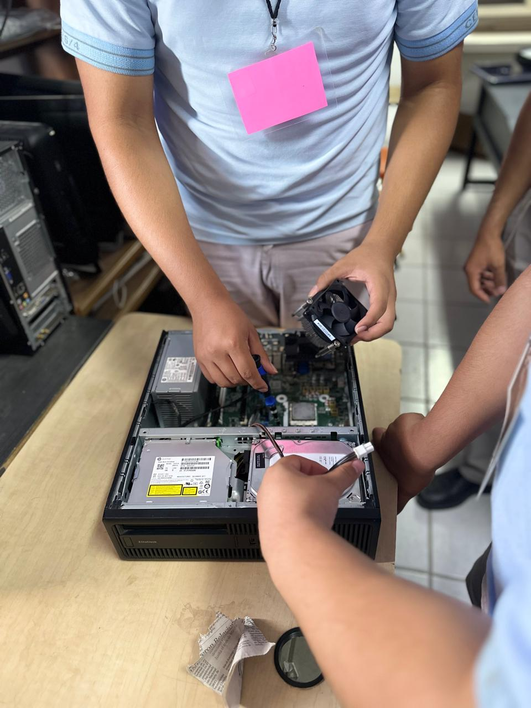
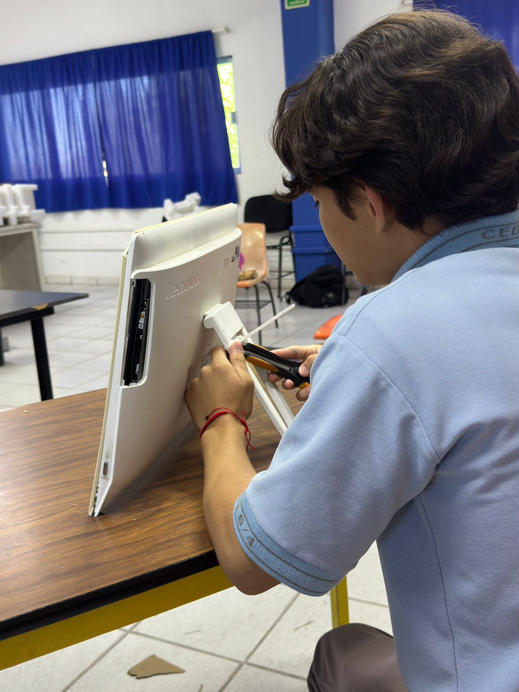

Aprende mantenimiento preventivo, diagnóstico y optimización de computadoras. Descubre cómo funcionan los componentes internos de un equipo y mejora el rendimiento de sistemas y hardware moderno.

Aprende a identificar, comprender y trabajar con los componentes físicos que forman una computadora. Conocerás el funcionamiento de procesadores, memorias RAM, discos duros y SSD, tarjetas madre, fuentes de poder, tarjetas gráficas, sistemas de enfriamiento y otros dispositivos esenciales para el correcto funcionamiento de un equipo.

Aprende a diagnosticar, reparar, optimizar y dar mantenimiento a equipos de cómputo de forma profesional. Desarrollarás habilidades para la limpieza física de computadoras, instalación y configuración de sistemas operativos, actualización de hardware, eliminación de virus y malware, respaldo de información y recuperación básica de datos.